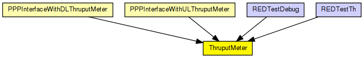
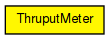

Thruput measurement utility module.
The following diagram shows usage relationships between types. Unresolved types are missing from the diagram.
The following diagram shows inheritance relationships for this type. Unresolved types are missing from the diagram.
| Name | Type | Description |
|---|---|---|
| PPPInterfaceWithDLThruputMeter | compound module |
PPP interface. Complements the PPP module with an output queue for QoS and RED support. |
| PPPInterfaceWithULThruputMeter | compound module |
PPP interface. Complements the PPP module with an output queue for QoS and RED support. |
| Name | Type | Description |
|---|---|---|
| REDTestDebug | network | (no description) |
| REDTestTh | network | (no description) |
| Name | Type | Default value | Description |
|---|---|---|---|
| startTime | double | 0s | |
| batchSize | int | 50 | |
| maxInterval | double | 1s |
| Name | Value | Description |
|---|---|---|
| node | ||
| display | i=block/timer_vs |
| Name | Direction | Size | Description |
|---|---|---|---|
| in | input | ||
| out | output |
// // Thruput measurement utility module. // simple ThruputMeter { parameters: @node(); double startTime @unit("s") = default(0s); int batchSize = default(50); double maxInterval @unit("s") = default(1s); @display("i=block/timer_vs"); gates: input in; output out; }